Available for Opportunities
Irtiyah
Daniyah
Destinaya
|
Bridging business operations, technology, and creativity to deliver meaningful digital experiences and business impact.
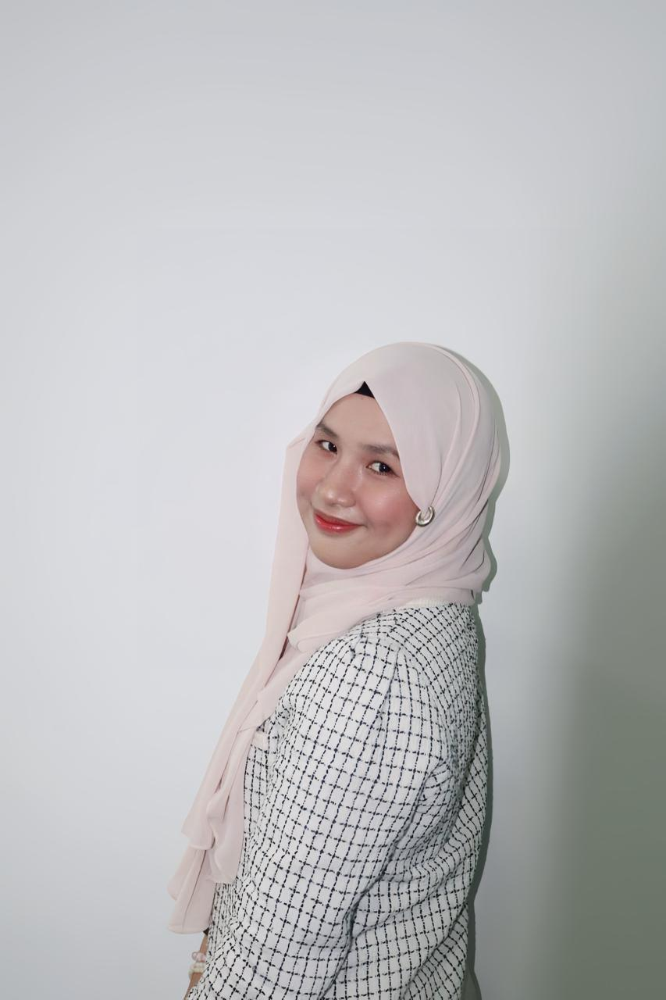
About
Who I Am
Hi! I am an Information Systems graduate with an interest in business operations, digital solutions, and user experience. With experience in startups, government, political organizations, and the education sector, I am accustomed to managing operational processes, coordinating various stakeholders, and supporting the implementation of user-centric digital solutions.
I believe that technology is not just about building systems, but also about understanding business needs, streamlining processes, and creating better experiences for users. Through my experience in finance and operations, project coordination, UI/UX evaluation, and digital content, I continue to develop my analytical, communication, and collaboration skills to deliver solutions that make a real impact.
I enjoy learning new things, working across functions, and contributing to projects that combine technology, strategy, and creativity to create value for both organizations and society.
Experience
Professional Journey


Finance & Ops Associate
- Managed driver data processing and verification through accurate data entry and documentation.
- Handled payment operations, financial administration, and reporting activities.
- Maintained operational and administrative documents to ensure accuracy and compliance.
- Coordinated field operations and supported daily operational activities.
- Assisted in operational problem-solving and cross-team coordination.
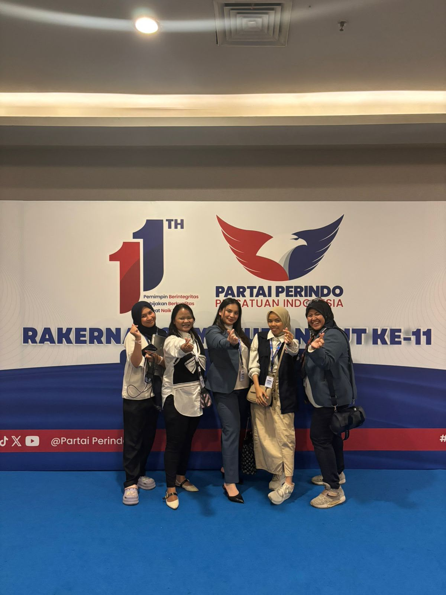
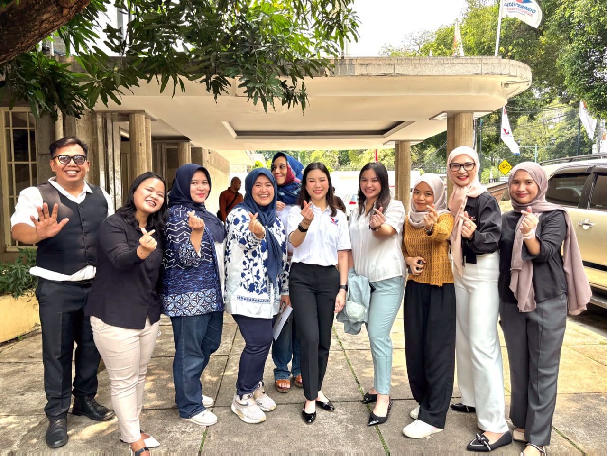
Admin & Content Puspadaya
- Managed social media operations and maintained consistent brand messaging across platforms.
- Created and published engaging multimedia content aligned with political development goals.
- Developed content strategies and handled end-to-end content production.
- Conducted administrative tasks, data management, and research as required.
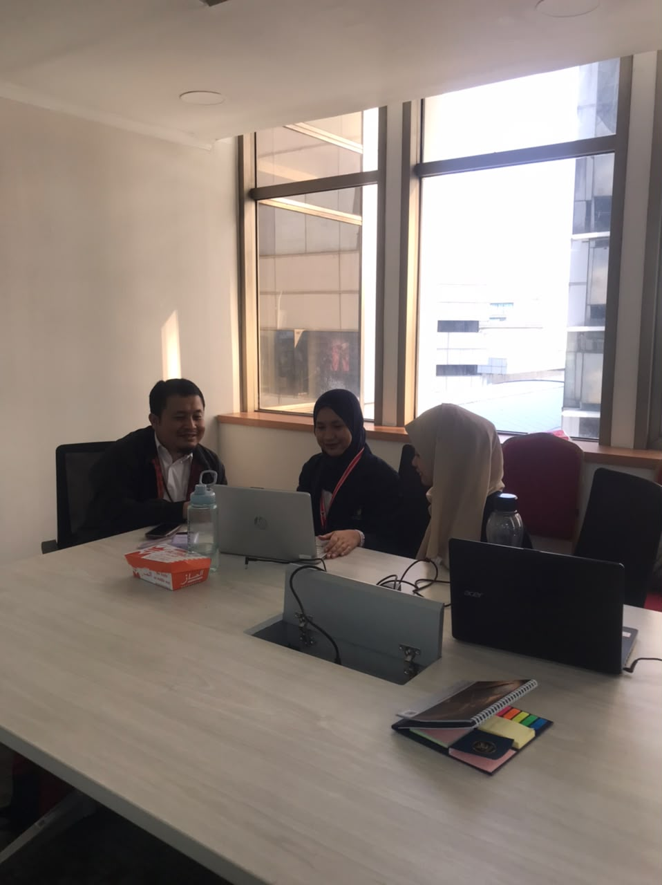
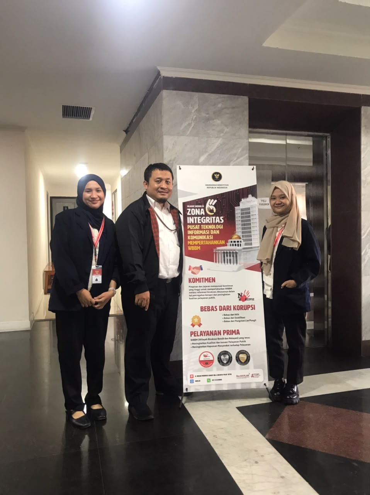
Interface Analyst Intern
- Conducted comprehensive UX/UI evaluation of 4 Constitutional Court websites.
- Created instructional video tutorial for SIMPEL to enhance user adoption and accessibility.
- Developed user guidelines and technical procedures for the electronic petition submission process.
- Worked directly with the PUSTIK team to assess digital infrastructure and recommend improvements.
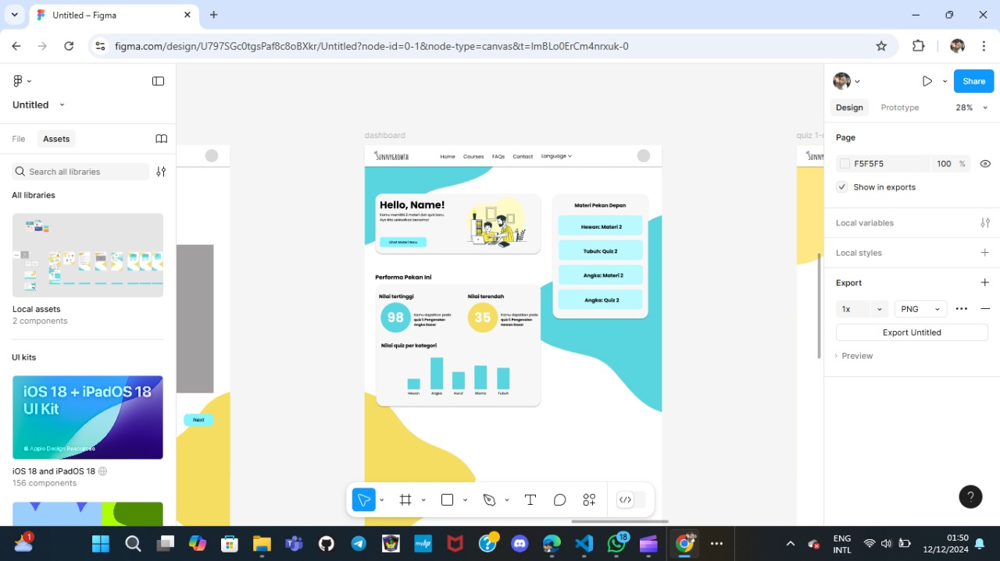
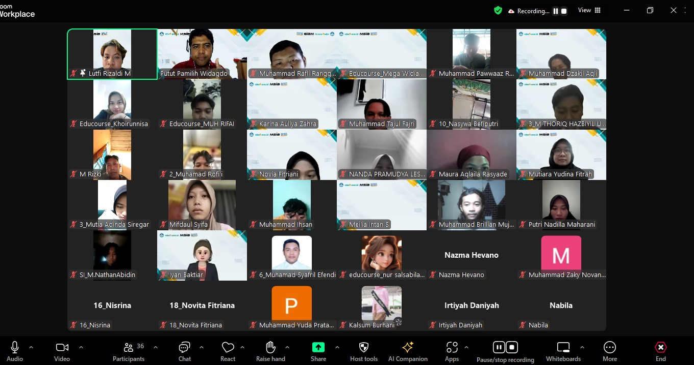
Platform & Web Developer · Tribe MSIB
- Collaborated in full-stack development of an educational business platform.
- Architected a responsive website achieving 95% mobile compatibility.
- Implemented interactive features, improving user engagement by 40%.
- Managed a development team of 5 members, ensuring 100% on-time project delivery.
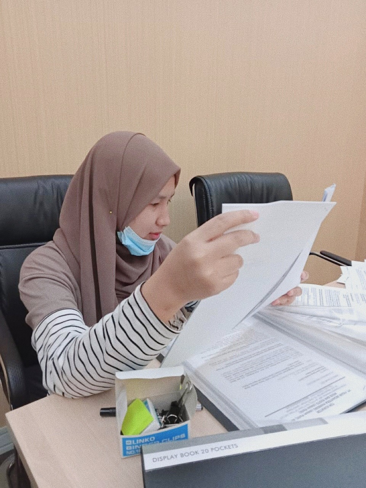
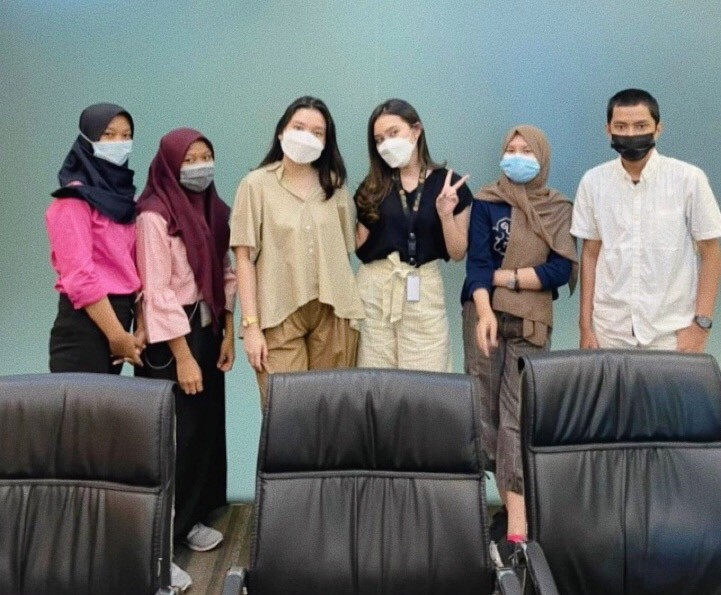
Internship Administration
- Responsible for collecting, filing, and organizing legal documents while ensuring accuracy and confidentiality.
- Gained hands-on experience in legal administration and strengthened organizational and document management skills.
- Assisted in maintaining an efficient document filing system to support daily legal operations.
Education
Academic Background
2022 – 2026
Information Systems
Universitas Indonesia Membangun
GPA: 3.91- Student exchange program at Esa Unggul University — cross-institutional insights.
- Analyzed business needs to design efficient, scalable information system solutions.
- Managed project resources, schedules, and budgets to deliver on time and within scope.
2019 – 2022
Office Management Automation
SMKN 17 Jakarta
- Developed time management and leadership skills through team coordination.
- Enhanced communication and presentation skills for conveying technical ideas.
- Proficient in business administration, data management, and company information systems.
Projects
Creative Work
SIMPEL UX Evaluation
Comprehensive UX/UI audit of 4 Constitutional Court websites, paired with user guidelines, delivered in direct collaboration with the PUSTIK team.
Educourse Web Platform
Full-stack educational platform · 95% mobile-ready · 40% engagement boost · 100% on-time delivery.
Perindo — Social Media Content
End-to-end content strategy and multimedia production for a political development program, maintaining consistent brand messaging across social platforms.
UI & Mockup Design
Designed mobile-first user interfaces supported by a scalable design system, reusable components, and clear design documentation.
Video Content
Social media video production & editing for organization awareness campaigns.
Graphic Design & Photo Editing
Posters, social media graphics, and photo retouching for events, organizations, and branding.
Skills
What I Bring
Hard Skills 0
Soft Skills 0
Volunteer
Giving Back
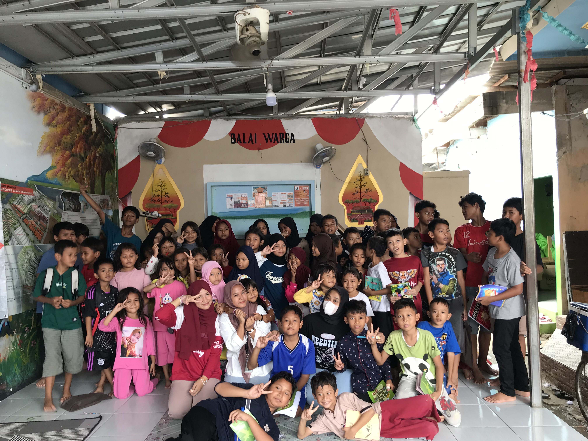
Jan 2023 – Dec 2024 · Teaching Division
KawanBestari
Provided personalized tutoring and group lessons following a structured curriculum. Customized teaching methods to accommodate diverse learning styles and maximize knowledge retention.
~2 years of commitment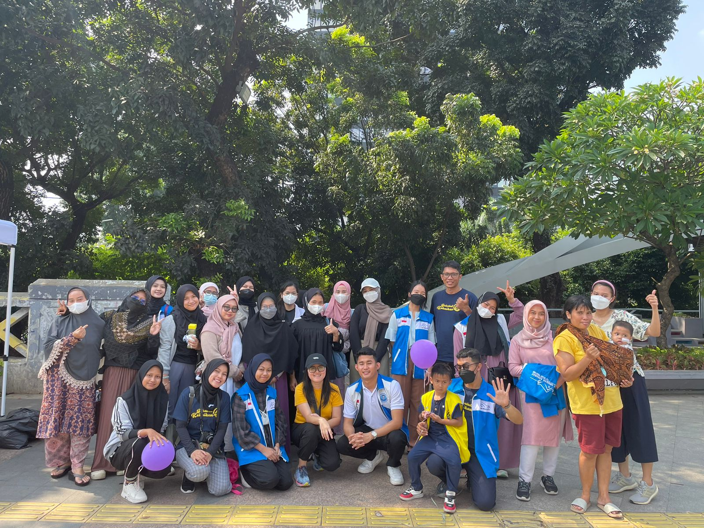
Jun 2023 – Present · Child Support
Rumah Singgah Sahabat
Served as video talent, assisted and accompanied children during hospital check-ups, and contributed as event committee member for multiple programs.
3+ years, ongoingCertificates
Recognition & Learning
A collection of certifications across internship, achievement, and professional development.
Internship Certificate
Certificates from internship programs at various companies.
Certificate of Achievement
Certificates for academic and non-academic achievements.
Volunteer Certificates & Webinars
Certificates for volunteer work and webinar participation.
Testimonials
What Others Say
Feedback from supervisors and collaborators across the organizations I've worked with.
It has been a real pleasure working with Tiya. She is incredibly attentive to detail, takes great initiative, adapts quickly, and demonstrates strong ownership of every task she handles. She understands exactly what needs to be done—you only need to brief her once, and she will consistently deliver the best possible outcome. If the opportunity arises in the future, I would be delighted to work with Tiya again on even bigger projects with greater impact. She also possesses excellent project management skills and is someone you can truly rely on. Although her current role is in Finance and Operations, her background is actually in coding and design, making her a remarkably multi-talented professional. Tiya brings creativity, analytical thinking, and execution together in a way that adds value wherever she goes. I have no doubt that she will continue creating value for her organization, her team, and everyone around her. I strongly recommend Tiya to any team looking for a highly capable, proactive, and dependable professional.
During your internship at Puspadaya, I noticed that you have an excellent work ethic and a strong sense of responsibility toward every task assigned to you. You always take the initiative, are eager to learn new things, and never hesitate to ask questions when something isn’t clear. The contribution I remember most is when you handled the content strategy and multimedia production for the development program. Your work was creative, well-organized, and always completed on time. You’re also excellent at coordinating with the team, communicate smoothly, and are open to feedback. In my opinion, your greatest strengths are your combination of creativity, attention to detail, and ability to adapt quickly. You’re the kind of person who can be relied upon in a team and has the drive to keep growing.
Tiya is diligent, capable, and responsible in every website analysis task she is assigned. In addition, Tiya always acts professionally by asking for permission when she needs to attend other activities. One of her most notable achievements is her success in raising the profile of the Constitutional Court through the publication of the “Simpel” app for case filing in a national scientific journal. Keep up the great work, Tiya, and we wish you continued success!
Let's Connect
Ready to Work Together?
Passionate about business, technology, and creativity. Open to opportunities where I can learn, grow, and create meaningful impact!